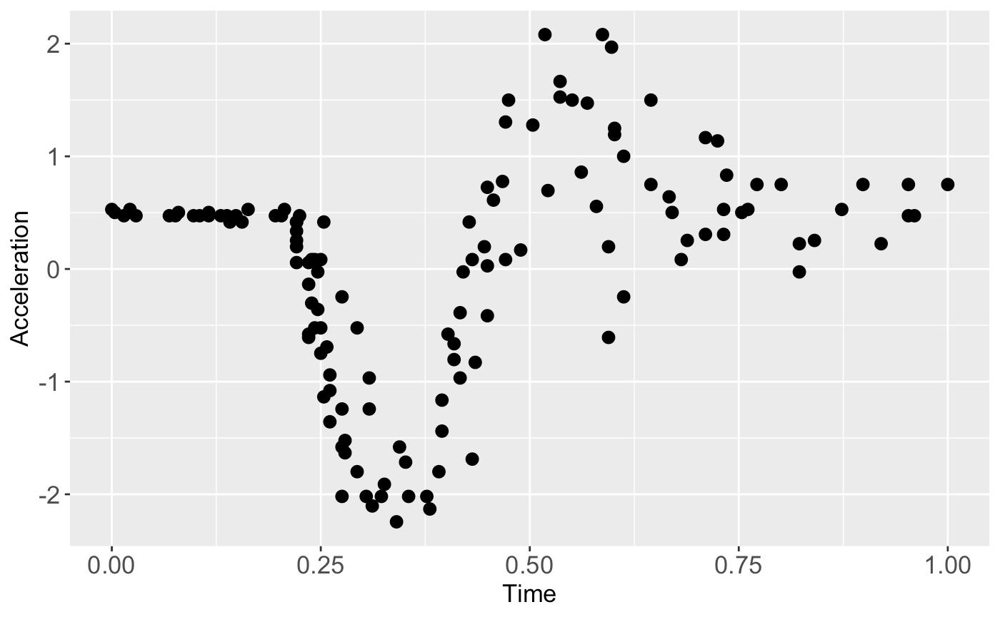
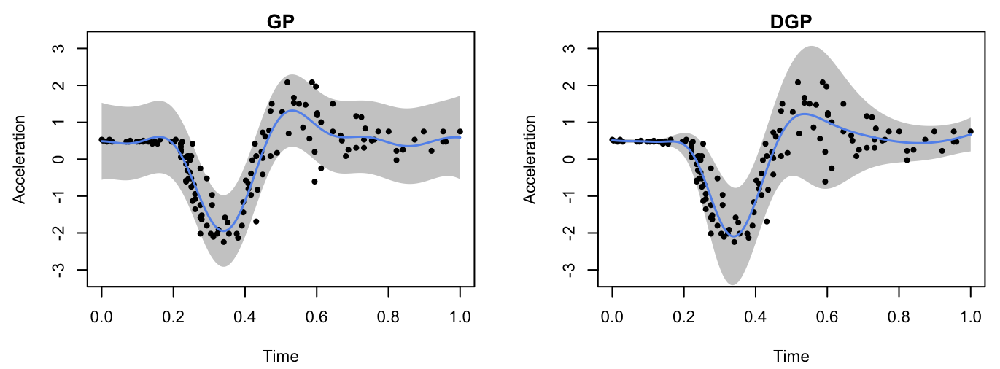

In this guide we give a quick demonstration of the package on modeling the popular motorcycle dataset (Silverman 1985). There are other examples showing the functionality of the package in Articles, and a comprehensive Reference of available functions documented in Reference.
Load packages and data
We start by first loading the package and setting up the required Python environment via init_py()
init_py() provides an automatic Python environment setup and initialization routine and must be run every time after the package is loaded. We then load the training data points,
X <- mcycle$times
Y <- mcycle$accelscale them,
and plot them:
plot(X, Y, pch = 16, cex = 1, xlab = 'Time', ylab = 'Acceleration', cex.axis = 1.3, cex.lab = 1.3)
Construct the DGP structure
We consider a three-layered DGP structure:
layer1 <- c(kernel(length = c(0.5), name = 'sexp'))
layer2 <- c(kernel(length = c(0.2), name = 'sexp', scale_est = TRUE, connect = c(1)),
kernel(length = c(0.2), name = 'sexp', scale_est = TRUE, connect = c(1)))
layer3 <- c(Hetero())
all_layer <- combine(layer1, layer2, layer3)
m <- dgp(X, Y, all_layer)The first layer of the DGP contains a single GP node produced by kernel() using the squared exponential kernel with the length-scale being 0.5. The second layer contains two GP nodes, both of which have squared exponential kernel with the length-scale being 0.2. We switch on the estimation of prior variances of these two GPs because they model the mean and variance of the heteroskedastic Gaussian likelihood node in the final layer. We choose a heteroskedastic likelihood node since the data above show varying noises.
The constructed DGP structure is stored in m and we can use summary() to view the key information specified for the DGP structure:
summary(m)## +-----------+----------+---------------------+-----------------+---------------+-------------------+------------+-------------------+
## | Layer No. | Node No. | Type | Length-scale(s) | Variance | Nugget | Input Dims | Global Connection |
## +-----------+----------+---------------------+-----------------+---------------+-------------------+------------+-------------------+
## | Layer 1 | Node 1 | GP (Squared-Exp) | [0.500] | 1.000 (fixed) | 1.000e-06 (fixed) | [1] | No |
## | Layer 2 | Node 1 | GP (Squared-Exp) | [0.200] | 1.000 | 1.000e-06 (fixed) | [1] | [1] |
## | Layer 2 | Node 2 | GP (Squared-Exp) | [0.200] | 1.000 | 1.000e-06 (fixed) | [1] | [1] |
## | Layer 3 | Node 1 | Likelihood (Hetero) | NA | NA | NA | [1, 2] | NA |
## +-----------+----------+---------------------+-----------------+---------------+-------------------+------------+-------------------+
## 1. 'Input Dims' presents the indices of GP nodes in the feeding layer whose outputs are used as the input to the current GP.
## 2. 'Global Connection' indicates the dimensions (i.e., column numbers) of the global input data that are used as additional input dimensions to the current GP.For comparison, we also construct a simple GP model (by gp()) which incorporates homogeneous noises:
gp_node <- kernel(length = c(0.5), name = 'sexp', nugget = 1e-2, nugget_est = T, scale_est = T)
m_gp <- gp(X, Y, gp_node)Note that we have nugget estimation switched on to account for the noises. The summary of the constructed GP model is given by
summary(m_gp)## +-------------+-----------------+----------+--------+------------+
## | Kernel Fun | Length-scale(s) | Variance | Nugget | Input Dims |
## +-------------+-----------------+----------+--------+------------+
## | Squared-Exp | [0.500] | 1.000 | 0.010 | [1] |
## +-------------+-----------------+----------+--------+------------+
## 'Input Dims' indicates the dimensions (i.e., columns) of your input data that are actually used for GP training.Training and prediction
We now are able to train the constructed DGP and GP models:
## Iteration 500: Layer 3: 100%|██████████| 500/500 [00:20<00:00, 24.80it/s]For DGP model, we need to construct a separate emulator through estimate() and emulator() for predictions:
Before we make predictions, we can summarize the trained GP:
summary(m_gp_trained)## +-------------+-----------------+----------+--------+------------+
## | Kernel Fun | Length-scale(s) | Variance | Nugget | Input Dims |
## +-------------+-----------------+----------+--------+------------+
## | Squared-Exp | [0.132] | 0.780 | 0.282 | [1] |
## +-------------+-----------------+----------+--------+------------+
## 'Input Dims' indicates the dimensions (i.e., columns) of your input data that are actually used for GP training.and DGP:
summary(emu)## +-----------+----------+---------------------+-----------------+---------------+-------------------+------------+-------------------+
## | Layer No. | Node No. | Type | Length-scale(s) | Variance | Nugget | Input Dims | Global Connection |
## +-----------+----------+---------------------+-----------------+---------------+-------------------+------------+-------------------+
## | Layer 1 | Node 1 | GP (Squared-Exp) | [0.890] | 1.000 (fixed) | 1.000e-06 (fixed) | [1] | No |
## | Layer 2 | Node 1 | GP (Squared-Exp) | [0.530] | 0.797 | 1.000e-06 (fixed) | [1] | [1] |
## | Layer 2 | Node 2 | GP (Squared-Exp) | [0.848] | 26.668 | 1.000e-06 (fixed) | [1] | [1] |
## | Layer 3 | Node 1 | Likelihood (Hetero) | NA | NA | NA | [1, 2] | NA |
## +-----------+----------+---------------------+-----------------+---------------+-------------------+------------+-------------------+
## 1. 'Input Dims' presents the indices of GP nodes in the feeding layer whose outputs are used as the input to the current GP.
## 2. 'Global Connection' indicates the dimensions (i.e., column numbers) of the global input data that are used as additional input dimensions to the current GP.We are now ready to make predictions from both models via predict() at 200 testing positions over \([0,1]\):
test_x <- as.matrix(seq(0, 1, length = 200))
res_dgp <- predict(emu, x = test_x)
res_gp <- predict(m_gp_trained, x = test_x)Finally, we plot the predictions from both models to check their emulation performance:
# extract predictive means and variances from DGP
mu_dgp <- res_dgp$mean # predictive means
sd_dgp <- sqrt(res_dgp$var) # predictive variances and compute predictive standard deviations
up_dgp <- mu_dgp + 2*sd_dgp # predictive upper bound
lo_dgp <- mu_dgp - 2*sd_dgp # predictive lower bound
# extract predictive means and variances from GP
mu_gp <- res_gp$mean
sd_gp <- sqrt(res_gp$var)
up_gp <- mu_gp + 2*sd_gp
lo_gp <- mu_gp - 2*sd_gp
par(cex=0.7, mar = c(5, 5, 0.9, 0.9)+0.2)
#GP
par(fig = c(0, 0.5, 0.2, 0.8))
plot(test_x, mu_gp, type = 'l', lwd = 1.5, col = 'cornflowerblue', main = "GP", xlab = 'Time', ylab = 'Acceleration', ylim = c(-3.2,3.2))
polygon(c(test_x, rev(test_x)), c(up_gp, rev(lo_gp)), col = 'grey80', border = F)
lines(X, Y, type = 'p',pch = 16, cex = 0.8)
lines(test_x, mu_gp, type = 'l', lwd = 1.5, col = 'cornflowerblue')
#DGP
par(fig = c(0.5, 1, 0.2, 0.8), new = TRUE)
plot(test_x, mu_dgp, type = 'l', lwd = 1.5, col = 'cornflowerblue', main = "DGP", xlab = 'Time', ylab = 'Acceleration', ylim = c(-3.2,3.2))
polygon(c(test_x, rev(test_x)), c(up_dgp, rev(lo_dgp)), col = 'grey80', border = F)
lines(X, Y, type = 'p',pch = 16, cex = 0.8)
lines(test_x, mu_dgp, type = 'l', lwd = 1.5, col = 'cornflowerblue')
The visualization shows that the DGP model gives a better performance than the GP model on modeling the heteroskedastic noises embedded in the underlying dataset.